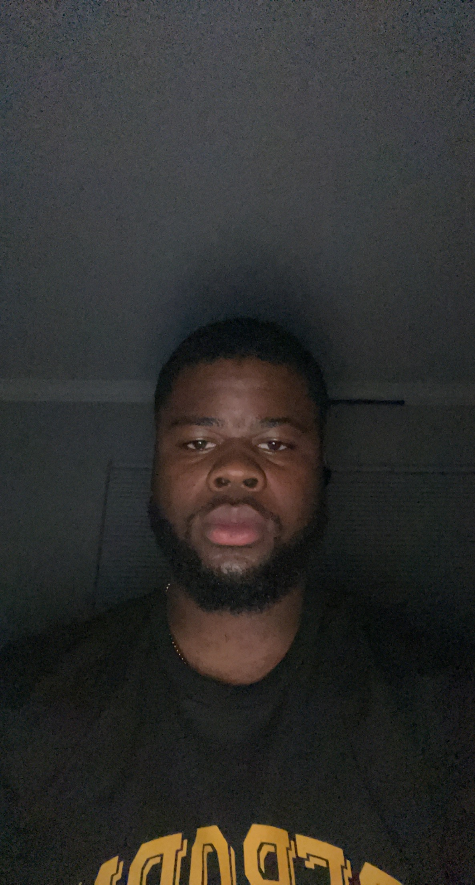

Simeon Nglamou
Sim
My Email
My headshot:

Introduction
Hello my name is Simeon Ngalamou. I was born in Jamaica but my parents are from a central African country callled Cameroon. I have one younger and older brother. My older brother's name is Emmmanuel and is 28 years old, and my younger brother's name is Mathieu and he is 19 years old. I'm a 5th year senior and a Computer Science major.
What I Hope to Learn in this Course
- Become more organized with my coding
- Further develop my coding abilities
- Improve my ability to stick to deadlines
My Favorite Hobby
My favorite hobby is soccer. Soccer has been a massive part of my life for as long as I can remember. I first started playing soccer when I was 3 years old. My older brother Emmanuel taught me almost everything I know about the sport and my siblings and I played against each other to train for almost a decade. It was a great way for us to bond and I believe it is the reason we are as close as we are to this day
Greatest Innovation
Fun Fact
A fun fact about me is that I'm a barber at Quality Studios in Joliet